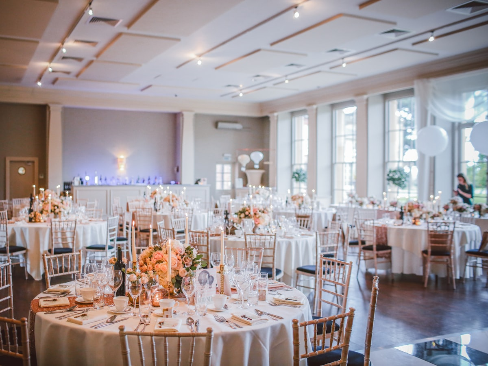
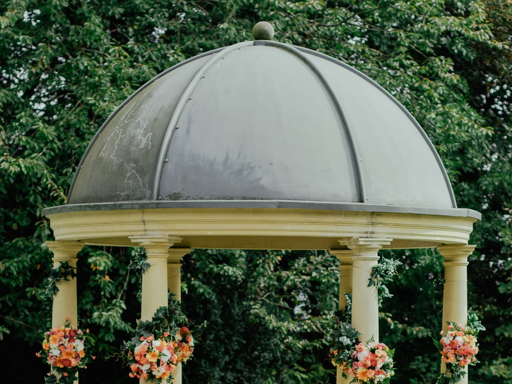

ประชุม & สัมมนา
ห้องเงียบ อินเทอร์เน็ตสำรอง เบรกสองมื้อ
฿690/ ท่าน · ครึ่งวัน–เต็มวัน
- โปรเจกเตอร์ 4K + ไมค์ลอย 4 ตัว
- อาหารว่าง 2 มื้อ + อาหารกลางวัน
- ที่จอดรถฟรี 60 คัน
ห้องริมน้ำสองห้อง ครัวของเราเอง ทีมดูแลหน้างานตลอดคืน — คุณเลือกแค่วัน ที่เหลือเราจัดให้ครบ
เหลือ 3 เสาร์ว่างในเดือนตุลาคม
ห้องเงียบ อินเทอร์เน็ตสำรอง เบรกสองมื้อ
ปาร์ตี้ปีใหม่ ฉลองยอด งานขอบคุณลูกค้า
พิธีเช้า–เลี้ยงเย็นในที่เดียว ไม่ต้องย้ายแขก
เลื่อนจำนวนแขกแล้วเห็นตัวเลขทันที — เป็นราคาประเมินจากราคาต่อท่านที่ประกาศไว้ ใบเสนอราคาจริงแจกแจงรายบรรทัดอีกที
฿690 × 120 ท่าน
ประเมินทั้งงาน฿82,800
ราคานี้รวมอาหาร เครื่องดื่ม จัดโต๊ะ เครื่องเสียงพื้นฐาน และทีมดูแลหน้างานแล้ว
ตารางนี้คือสิ่งที่ลูกค้าถามมากที่สุดหลังเห็นราคาต่อท่าน — เขียนไว้ก่อนคุยกัน จะได้ไม่ต้องมาเซอร์ไพรส์กันตอนใบเสนอราคา
| รายการ | ประชุม฿690 | งานเลี้ยงบริษัท฿890 | งานแต่ง฿1,290 |
|---|---|---|---|
| ค่าเช่าสถานที่ | รวมแล้ว | รวมแล้ว | รวมแล้ว |
| อาหารและเครื่องดื่ม | เบรก 2 มื้อ + กลางวัน | บุฟเฟต์ 12 รายการ | โต๊ะจีน 9 รายการ |
| เครื่องเสียง + ไมค์ | |||
| จอ LED เต็มผนัง | โปรเจกเตอร์ 4K | ||
| ดอกไม้ ซุ้ม แสงเวที | คิดเพิ่ม | คิดเพิ่ม | |
| ผู้ดูแลงานประจำคุณ | + เวดดิ้งแพลนเนอร์ | ||
| ห้องเตรียมตัว | ไม่มี | ห้องพักทีมงาน | ห้องเจ้าสาว + ห้องเจ้าบ่าว |
| ที่จอดรถ | ฟรี 60 คัน | ฟรี 60 คัน | ฟรี 60 คัน + วาเลต์ |
| เลยเวลาที่ตกลง | ชม.ละ ฿3,000 | ชม.ละ ฿5,000 | ชม.ละ ฿5,000 |
ทุกราคายังไม่รวม VAT 7% · หักภาษี ณ ที่จ่ายได้ตามปกติ · ใบเสนอราคาแจกแจงทุกบรรทัดเหมือนในตารางนี้
ย้ายจากพิธีเช้าไปงานเลี้ยงเย็นได้โดยแขกไม่ต้องขึ้นรถ ทุกห้องเดินถึงกันในสองนาที

ห้องใหญ่เพดานสูง เวทีถาวร จอ LED เต็มผนัง เหมาะกับงานเลี้ยงบริษัทและงานแต่งช่วงเย็น

ลานกลางแจ้งติดน้ำ ใช้สำหรับพิธีเช้าและงานค็อกเทล มีผ้าใบกันฝนสำรองทุกงาน
ห้องเก็บเสียง แสงธรรมชาติเต็มด้าน อินเทอร์เน็ตสองเส้นแยกวงจร สำหรับสัมมนาและอบรม
อาหารทุกจานออกจากครัวหลังห้องจัดเลี้ยง ทีมหน้างานเป็นพนักงานประจำ 22 คน — เวลามีอะไรผิดแผนกลางงาน คุณเรียกคนที่แก้ได้ ไม่ใช่คนที่ต้องโทรถามคนอื่นต่อ
โทรหรือทักไลน์ เราตอบกลับว่าว่างหรือไม่ว่างภายในวันเดียวกัน ไม่ต้องกรอกฟอร์มยาว
เดินดูของจริงทั้งสามพื้นที่ ชิมอาหารชุดตัวอย่างได้ในวันเดียวกันถ้านัดล่วงหน้า 3 วัน
ได้ใบเสนอราคาที่แจกแจงทุกรายการ ราคาที่เซ็นแล้วไม่ขยับ แม้ของขึ้นราคาก่อนวันงาน
หนึ่งคนคุมงานตั้งแต่เซ็ตโต๊ะจนแขกกลับ เบอร์ตรงถึงตัว ไม่ต้องผ่านคอลเซ็นเตอร์
นี่คือรันดาวน์จริงของงานหนึ่งที่จัดไปเมื่อเดือนที่แล้ว — เอามาให้ดูเพราะคำถาม "แล้ววันนั้นใครทำอะไรบ้าง" ตอบด้วยตารางง่ายกว่าอธิบาย
ปูผ้า จัดโต๊ะ 18 โต๊ะ ติดตั้งซุ้มดอกไม้และระบบเสียง — ก่อนเจ้าภาพมาถึงสามชั่วโมง
ช่างแต่งหน้าและช่างภาพเข้าใช้ได้ มีอาหารเช้าและน้ำเตรียมไว้ให้ทีมของคุณ
ขันหมาก รดน้ำสังข์ ผู้ดูแลงานคุมคิวญาติผู้ใหญ่ตามลำดับที่ซ้อมไว้
ครัวเสิร์ฟข้าวกล่องให้ทีมงาน ช่างภาพ และวงดนตรี รวมอยู่ในแพ็กเกจแล้ว
ทีมเดียวกันเก็บลานเช้าและเซ็ตห้องแกรนด์ต่อ — ไม่มีการย้ายผู้รับเหมาเข้าออก
โต๊ะลงทะเบียน 2 จุด ป้ายชื่อโต๊ะพิมพ์ไว้ล่วงหน้า ทีมพาแขกไปนั่งตามผัง
ครัวออกอาหารพร้อมกันทั้งห้องภายใน 6 นาที ร้อนถึงโต๊ะสุดท้าย
ทีมเสียงคุมคิววงดนตรีและวิดีโอ ผู้ดูแลงานเดินส่งแขกที่ประตูพร้อมของชำร่วย
ของขวัญ ซองและอุปกรณ์ทั้งหมดเช็กตามรายการ เซ็นรับส่งกันตรงนั้น ไม่ต้องกลับมาเอาวันหลัง
★★★★★
ฝนตกหนักตอนบ่ายวันงาน ทีมย้ายพิธีเข้าห้องใหญ่ให้ใน 40 นาที แขกไม่รู้เลยว่ามีแผนเปลี่ยน
★★★★★
จัดงานปีใหม่บริษัทสามปีติด ใบกำกับภาษีออกครบทุกครั้ง ฝ่ายบัญชีไม่เคยตีกลับ
★★★★☆
ที่จอดรถเต็มเร็วกว่าที่คิดตอนงานใหญ่ แต่มีทีมช่วยจัดคิวรถให้ อาหารร้อนทุกจานจริง
รวมอาหาร เครื่องดื่ม การจัดโต๊ะ เครื่องเสียงพื้นฐาน และทีมบริการหน้างาน ส่วนดอกไม้ ซุ้ม และแสงเวทีรวมอยู่ในแพ็กเกจงานแต่งเท่านั้น รายการนอกเหนือจากนี้แจกแจงเป็นรายบรรทัดในใบเสนอราคา
งานบริษัทขนาด 40–80 ท่าน จองล่วงหน้า 3 สัปดาห์พอ ส่วนงานแต่งเสาร์-อาทิตย์ช่วงพฤศจิกายน–กุมภาพันธ์ ควรล็อกวันล่วงหน้า 6–8 เดือน
เครื่องดื่มแอลกอฮอล์นำมาเองได้ คิดค่าเปิดขวดขวดละ 300 บาท ส่วนอาหารต้องออกจากครัวของเราเท่านั้น ยกเว้นเค้กแต่งงานและขนมพิธี
ทุกงานกลางแจ้งมีแผนสำรองเขียนไว้ในสัญญาตั้งแต่วันเซ็น ว่าจะย้ายเข้าห้องไหนและใช้เวลากี่นาที ไม่มีค่าใช้จ่ายเพิ่มเมื่อต้องย้าย
เลื่อนได้หนึ่งครั้งโดยไม่มีค่าปรับ ถ้าแจ้งก่อนวันงาน 45 วันขึ้นไป ส่วนการยกเลิกคืนมัดจำ 50% เมื่อแจ้งก่อน 60 วัน
ทุกอย่างในรายการนี้อยู่ในตึก ใช้ได้เลยในวันงาน — สิ่งที่ต้องเช่าเข้ามาจะเขียนไว้ในใบเสนอราคาเป็นบรรทัดแยก
เปิดให้ชมสถานที่ทุกวัน 10:00–19:00 (ควรนัดล่วงหน้า เพราะบางช่วงมีงานจริงอยู่ในห้อง) · โทร 02-xxx-xxxx